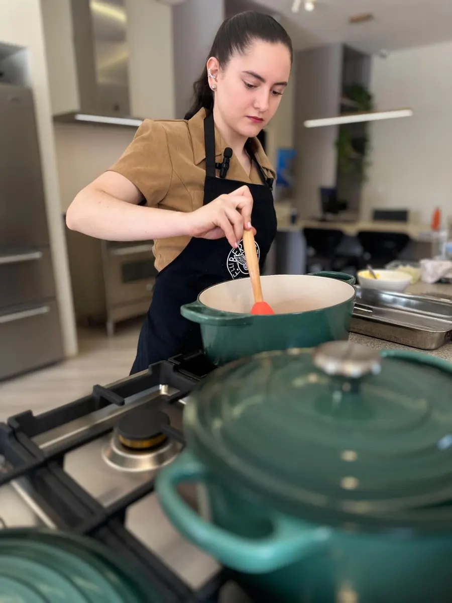

Como funciona
Cozinhar na sua casapede combinados.
Para dar certo, ela precisa de algumas coisas da sua casa. Quanto mais claro agora, mais tranquilo o dia do atendimento.
O passo a passo
Do primeiro contato ao prato pronto

Conversa e alinhamento
Tudo começa pelo WhatsApp: restrições, gostos, plano do nutricionista (se houver), rotina da casa e frequência. Juntos, definem o que será cozinhado, o que será necessário e o investimento.
Os ingredientes
Quem compra, prioritariamente, é você. A lista é definida antes, em conjunto, e tudo já está em casa no dia. Se preferir que ela compre, isso é combinado antes, com prestação de contas e taxa de serviço informada previamente.
O descongelamento
Não dá para cozinhar com carne congelada. Por isso há um protocolo: você é orientado, com antecedência, sobre o que sai do freezer e quando, e o descongelamento segue procedimento seguro. Tudo pronto na chegada.
O dia do atendimento
A cozinha precisa estar disponível durante todo o período combinado, com liberdade para abrir geladeira, freezer e armários. No começo, você mostra onde ficam panelas, utensílios e mantimentos.
Pronto, e ela vai embora
Cozinha, deixa as refeições prontas e vai embora, sem servir. Em pequenos encontros em casa, ela faz os preparos e, se for preciso, indica um garçom.
Antes de começar
O que a Aline precisa da sua casa
Parece muita coisa, mas é o que garante um atendimento tranquilo, seguro e no horário. Se algum ponto for difícil, conversem antes. Quase tudo tem solução.
Cozinha disponível
Durante todo o período combinado, sem outras atividades na cozinha ao mesmo tempo.
Acesso livre
Liberdade para abrir geladeira, freezer, armários e despensa e pegar o que for preciso.
Ingredientes em casa
Comprados conforme a lista combinada, já separados para o dia.
Itens descongelados
Carnes e outros congelados já descongelados, conforme o protocolo que a Aline passa.
Panelas e utensílios
Panelas, facas, tábuas e utensílios disponíveis, com você mostrando onde ficam.
Fogão, forno e bancada
Funcionando e livres para o trabalho durante o atendimento.
Alergias e restrições graves
Cuidado redobrado
Segurança alimentar é levada muito a sério, com casos de alergia grave já atendidos. Nesses, o protocolo é próprio e combinado antes de começar:
- 01 Higiene reforçada ao chegar, até banho na entrada quando o caso pede.
- 02 Cuidado com utensílios, panos e superfícies, para evitar contaminação cruzada.
- 03 Cuidado com o lixo, que não fica na sua casa.
Antes de aceitar, ela conversa com você e pode pedir a orientação do seu médico ou alergista. Se não puder garantir a segurança, ela não atende, e diz isso com respeito.
Faz sentido para a sua casa?
Então vamos conversar
Conte o que você precisa. A resposta é pessoal e diz se há espaço. O investimento é apresentado na conversa, antes de qualquer compromisso.